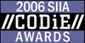

 The winners of the 21st Annual Codie Awards were honored at a black-tie gala on May 16, 2006 at the Westin St. Francis Hotel in San Francisco, CA — and Sun Microsystems Inc. was one of them. NetBeans IDE 4.1 won in the category Best Software Development Solution. A complete list of winning companies is available on www.siia.net.
The Codie Awards were established in 1986 and are given each year by the Software & Information Industry Association (SIIA). Both journalist and peer-company reviews are used to identify the leaders and innovators in 71 categories across the software, digital content and education technology industries. Hundreds of technology executives attended the gala event to recognize and congratulate the winners.
This year’s winners were chosen from more than 1,026 nominations – the most in the history of the Codies – for the excellence of their products, services, corporate leadership and philanthropy. Judges for the first round of voting included journalists from industry trade publications, technology writers from mainstream publications, consultants and other industry experts. SIIA member companies voted in the second round of selection.
"This 21st Annual CODiE Awards continues our tradition of celebrating the best products in the software and information industry." said Ken Wasch, President of SIIA, "Being a winner among so many fine nominees is a solid achievement. I congratulate all of the companies."
For a complete list of NetBeans awards please see our press section
.